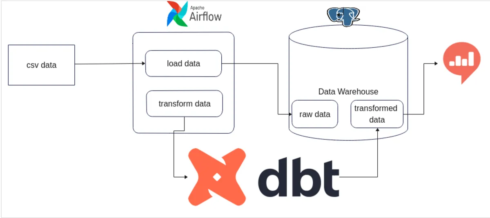

ELT Data Pipeline
using Python, DBT,
Airflow & Docker

Used Python Language to write ELT script .
Used Data Build Tool(DBT) to Transform the Data .
Used Apache Airflow to streamline & automate complex tasks.
Implemented Docker to containerize the application.
PostgreSQL to store both raw & transformed data.
Python ELT script code 🚀
import subprocess
import time
# Configuration for the source PostgreSQL database
source_config = {
'dbname': 'source_db',
'user': 'postgres',
'password': 'secret',
'host': 'source_postgres'
}
# Configuration for the destination PostgreSQL database
destination_config = {
'dbname': 'destination_db',
'user': 'postgres',
'password': 'secret',
'host': 'destination_postgres'
}
# Command to check if the data already in destination_db or not
check_destination_db_tables = [
'psql',
'-h', destination_config['host'],
'-U', destination_config['user'],
'-d', destination_config['dbname'],
'-c', "SELECT EXISTS (SELECT 1 FROM public.users LIMIT 1);"
]
# Set the PGPASSWORD environment variable for the source & destination database
source_pwd = dict(PGPASSWORD=source_config['password'])
destination_pwd = dict(PGPASSWORD=destination_config['password'])
# Execute the command to check if table/data in source_db & destination_db
destination_db_result = subprocess.run(check_destination_db_tables, env=destination_pwd, capture_output=True, text=True)
if destination_db_result.returncode != 0:
print("Destination Database is Empty!! Initiate executing ELT script ...")
# Use postgres ibuilt 'pg_dump' command to dump source database data to a .sql file
dump_command = [
'pg_dump',
'-h', source_config['host'],
'-U', source_config['user'],
'-d', source_config['dbname'],
'-f', 'data_dump.sql',
'-w' # -w flag, do not prompt for password
]
# Executing dump_command using subprocess.run()
subprocess.run(dump_command, env=source_pwd, check=True)
# Use psql to load the dumped SQL file into the destination database
load_command = [
'psql',
'-h', destination_config['host'],
'-U', destination_config['user'],
'-d', destination_config['dbname'],
'-a', '-f', 'data_dump.sql'
]
# Execute the load command
subprocess.run(load_command, env=destination_pwd, check=True)
print("Successfully finished loading data into destination database ...")
elif destination_db_result.returncode == 0:
print("There may already have data inside the destination_db table OR Database connectivity issue.")
Airflow code 🚀
from datetime import datetime, timedelta
from airflow import DAG
from docker.types import Mount
from airflow.operators.python_operator import PythonOperator
from airflow.operators.bash import BashOperator
from airflow.providers.docker.operators.docker import DockerOperator
import subprocess
# default configuration options for DAG
default_args = {
'owner': 'airflow',
'depends_on_past': False,
'email_on_failure': False,
'email_on_retry': False,
# 'retries': 1,
# 'retry_delay': timedelta(minutes=3),
}
# function to run the elt_script.py
def run_elt_script():
script_path = "/opt/airflow/elt_script/elt_script.py"
result = subprocess.run(["python", script_path], capture_output=True, text=True)
if result.returncode != 0:
raise Exception(f"ELT Script failed with error: {result.stderr}")
else:
print(result.stdout)
# Creating/Declaring a DAG object
dag = DAG(
'elt_and_dbt',
default_args=default_args,
description='An ELT workflow with dbt',
start_date=datetime(2024, 2, 13),
catchup=False,
)
# Setting our first task t1 (i.e To run elt_script.py from docker container)
t1 = PythonOperator(
task_id='run_elt_script',
python_callable=run_elt_script,
dag=dag,
)
# setting 2nd task t2 (i.e To run 'DBT' from docker container)
t2 = DockerOperator(
task_id='dbt_run',
image='ghcr.io/dbt-labs/dbt-postgres:1.4.7',
command=[
"run",
"--profiles-dir",
"/root",
"--project-dir",
"/dbt",
"--full-refresh"
],
auto_remove=True,
docker_url="unix://var/run/docker.sock",
network_mode="bridge",
mounts=[
Mount(source='/home/dhiraj/Desktop/data-pipeline-with-python-dbt-airflow/data_transformations', target='/dbt', type='bind'),
Mount(source='/home/dhiraj/.dbt', target='/root', type='bind'),
],
dag=dag
)
# Task dependencies for execution of all DAG tasks in Order
t1 >> t2